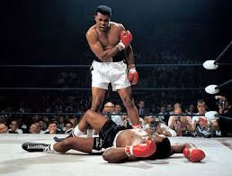

Top 5 Boxers:
-
Mike Tyson:

Mike Tyson, born Michael Gerard Tyson on June 30, 1966, in Brooklyn, New York, is a legendary American boxer widely regarded as one of the most ferocious and dominant heavyweight champions in boxing history. Known as "Iron Mike" and "The Baddest Man on the Planet," Tyson captivated the boxing world with his extraordinary power, speed, and intimidating presence.
-
Muhammad Ali
Known as "The Greatest," Ali's unmatched combination of speed, skill, and charisma made him an icon. A three-time heavyweight champion with legendary bouts against Joe Frazier, George Foreman, and Sonny Liston.